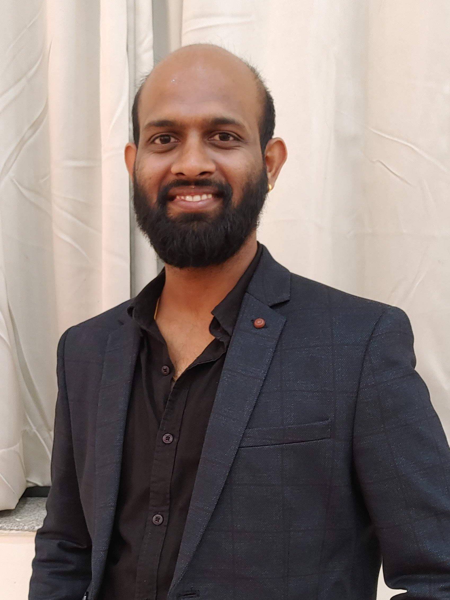
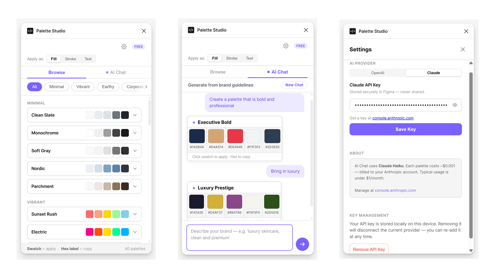
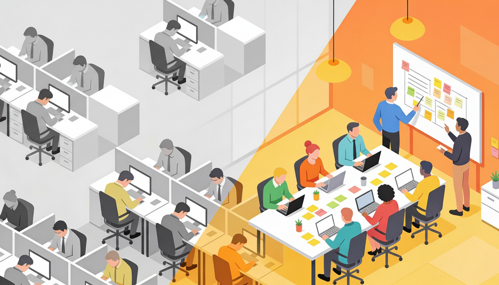
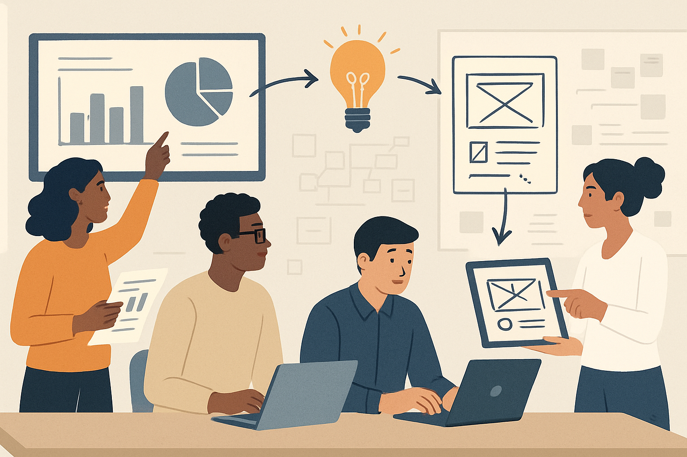

I built a Figma plugin with Claude
The honest, messy story behind taking an AI-assisted idea from frustration to a published plugin.
UX design leader · Bengaluru, India
I lead teams and design user-centered solutions that bridge business goals with user needs, transforming complex problems into intuitive digital products.

Selected work
Selected work across enterprise transformation, service design, and hands-on product craft.
A responsive redesign that unified fragmented workflows across Health, Motor, Travel, Marine and four other insurance products.
Research, information architecture and interaction design for a 12-month enterprise transformation.
Read the case study →Reframing a static request form as a progressive workspace for requesters, coordinators and independent service teams.
A research-led information architecture and prototype for complex, multi-location visits.
Read the case study →Establishing a UX-led process for a 40+ member marketing organization to adopt DMOD and deliver more consistent Deloitte.com pages.
A 1.5-year transformation across process creation, team adoption, analytics readiness and workflow refinement.
Read the case study →A one-month product experiment that used AI across research, design-system direction, accessibility review, implementation and Google Play closed testing.
A working Hindu moon-tracking PWA shaped by Panchang users, interested beginners and release-readiness testing.
Read the case study →Other projects & experiments
Enterprise UX work spanning research, synthesis, and product design.
A product-design engagement focused on simplifying discovery and action.
An AI-assisted Panchang PWA currently in Google Play closed testing.
How I lead
Good teams need enough structure to move with confidence, without taking ownership away from the people closest to the work.
The work starts with the user and business outcome, defines success measures early, and keeps everyday decisions connected to a clear purpose.
Decision rights and handoffs are made explicit, so designers and partners have the clarity and space to lead their part of the problem.
Research, engineering and delivery constraints are brought into the conversation early, with short learning loops to test assumptions before they become expensive commitments.
Healthy challenge, clear reasoning and coaching through questions help the team become more capable instead of more dependent on one person.
Selected writing
Writing about AI-assisted design, team practices, and applying research.

The honest, messy story behind taking an AI-assisted idea from frustration to a published plugin.

What redesigning a team’s work taught me about engagement, efficiency, and leadership.

Why research becomes valuable only when insights are translated into meaningful, defensible design decisions.
About
I’m a UX design leader with 11+ years across backend engineering, product design, research, and team management. At Deloitte USI, I lead cross-functional delivery across web platforms, performance dashboards, and AI-powered internal tools—while remaining close to the craft.
Starting as a backend developer shaped how I design: I look for the system behind the screen, make constraints explicit, and work comfortably with both designers and engineers. An M.Des in Product Design added human-centred inquiry to that technical foundation.
Contact
UX transformation · BFSI
An enterprise UX project focused on simplifying the workflow, improving usability, and aligning a cross-functional team.
Agents needed to complete policy issuance quickly and with confidence. The team first needed a shared view of the workflow, its business rules, and the points where users encountered difficulty.
I connected research findings, product constraints, stakeholder priorities, and delivery decisions throughout the project.
This gave business and technical teams a shared basis for discussing priorities and trade-offs.
The redesigned experience reduced policy issuance time to approximately one minute and contributed to a reported 300% increase in agent digital engagement.
Add before-and-after task metrics, usability evidence, and a stakeholder quote when available.
I would add workflow instrumentation earlier and connect usability findings with operational metrics throughout delivery.
AI tooling · Delivery transformation
An internal tool designed to reduce repetitive production work while retaining brand controls and human review.
Digital ad production required many predictable variations. The process took time away from concept development, review, and other design work.
I mapped repeatable steps, brand constraints, review points, and likely failure conditions. This helped distinguish tasks that could be automated from decisions that still required a designer.
The tool reduced production time by approximately 60% and provided a reference for evaluating similar workflows.
Add adoption numbers, an error-rate comparison, and examples of generated output when disclosure permits.
Figma plugin · AI-assisted building
A self-initiated project covering product definition, interaction design, AI-assisted development, testing, and publication.
Designers often need to leave Figma, search documentation, interpret a rule, and then return to their work. The plugin explores whether common guidance can be made available within that workflow.
I defined the scope, designed the interaction, used AI to assist implementation, tested failure states, and completed the Figma Community review process.
The project gave me practical experience moving from problem definition to interaction design and implementation, including the limitations of AI-assisted development.
A future version could use lightweight analytics and feedback to identify the guidance people use most often and where additional support is needed.
Product strategy · Design leadership · AI-enabled workflows
UX design leader with 11+ years across backend engineering, product design, research, and team management. Combines systems thinking, hands-on craft, and technical fluency to lead enterprise products and AI-enabled workflows.
Lead a cross-functional team across web platforms, dashboards, and AI-powered internal tools. Built tools reducing production time by approximately 60% and introduced delivery practices that reduced project timelines by approximately 30%.
Led a 13-member cross-functional team across 60+ usability and accessibility evaluations. Improved defect detection from 75% to 95% and led portal work contributing to a 300% increase in agent digital engagement.
Redesigned reception and check-in experiences across business and leisure properties.
Built backend logic for 22 interoperable CAD viewer features for industrial applications.
Product strategy and discovery · Design leadership · Enterprise UX and accessibility · Design systems · AI-enabled workflows · Technical prototyping · Stakeholder alignment · Team mentoring
MIT Institute of Design, Pune
PSG College of Technology, Coimbatore
Outstanding Performance Award, Deloitte USI · Spot Awards and Applause Award, Deloitte USI · Innovation Pride Award, TCS / Ericsson · On the Spot Awards, TCS